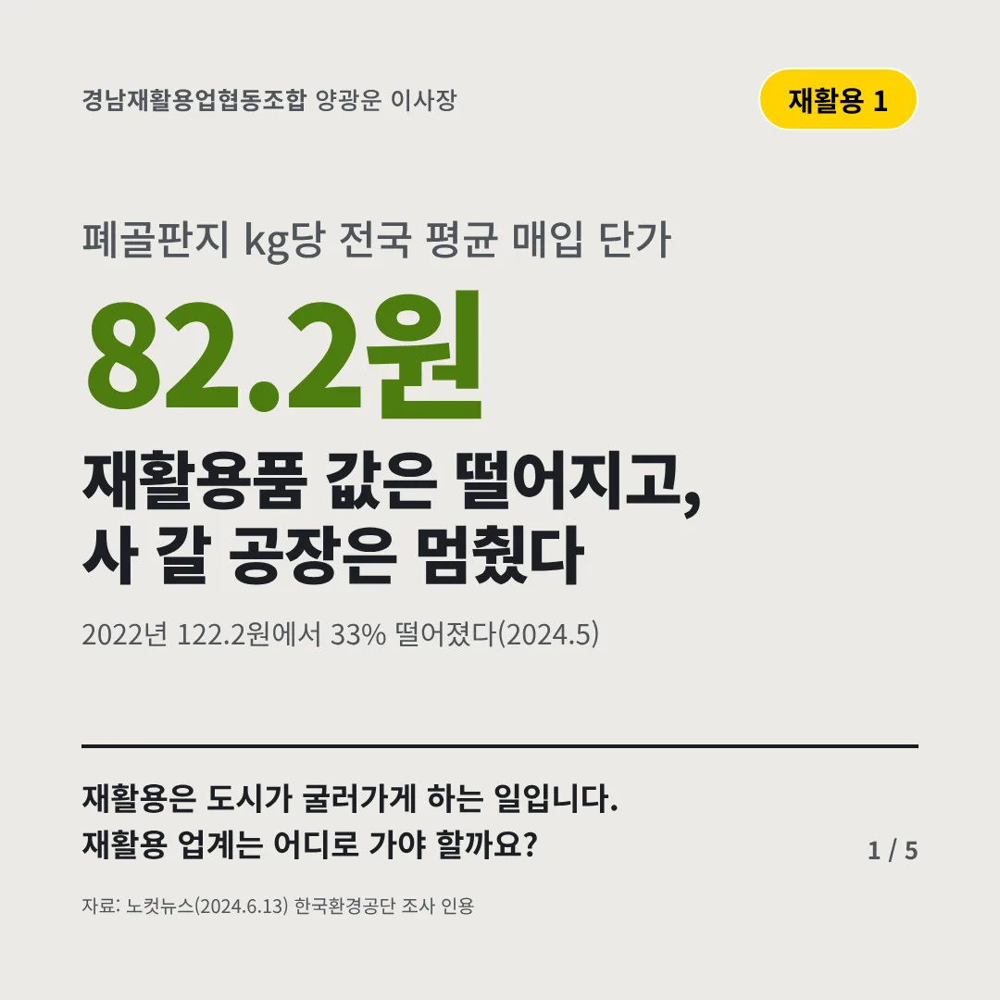
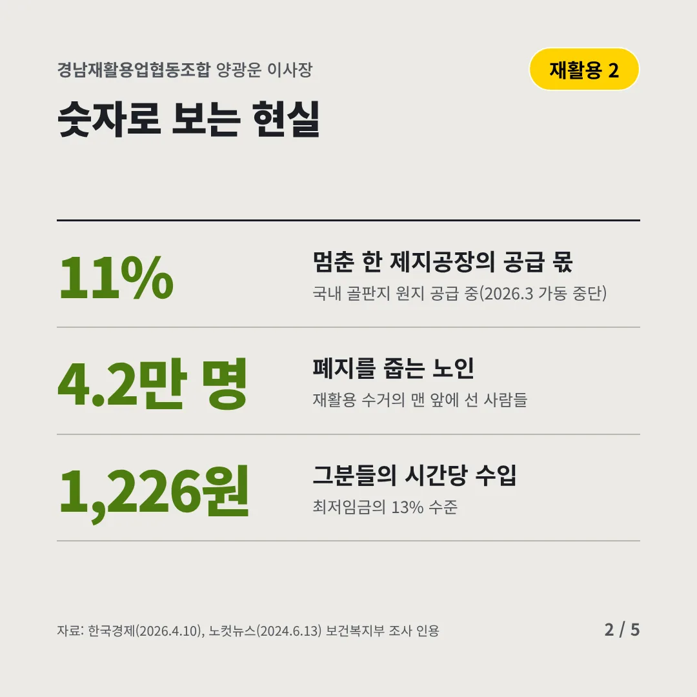
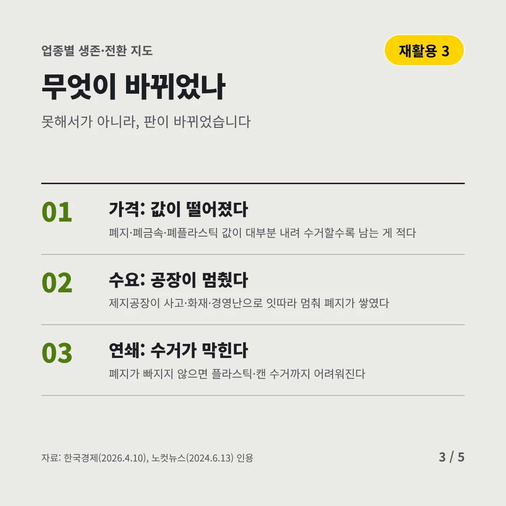
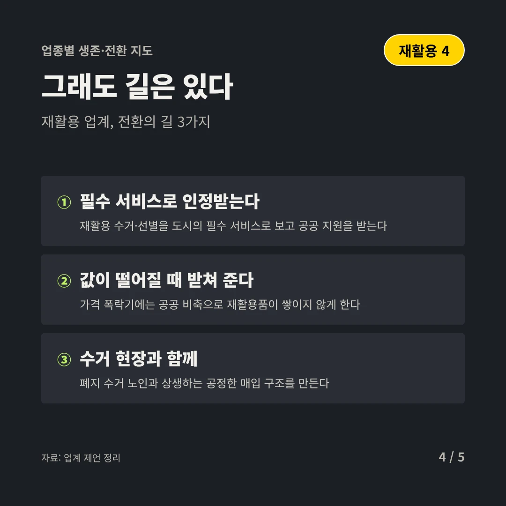
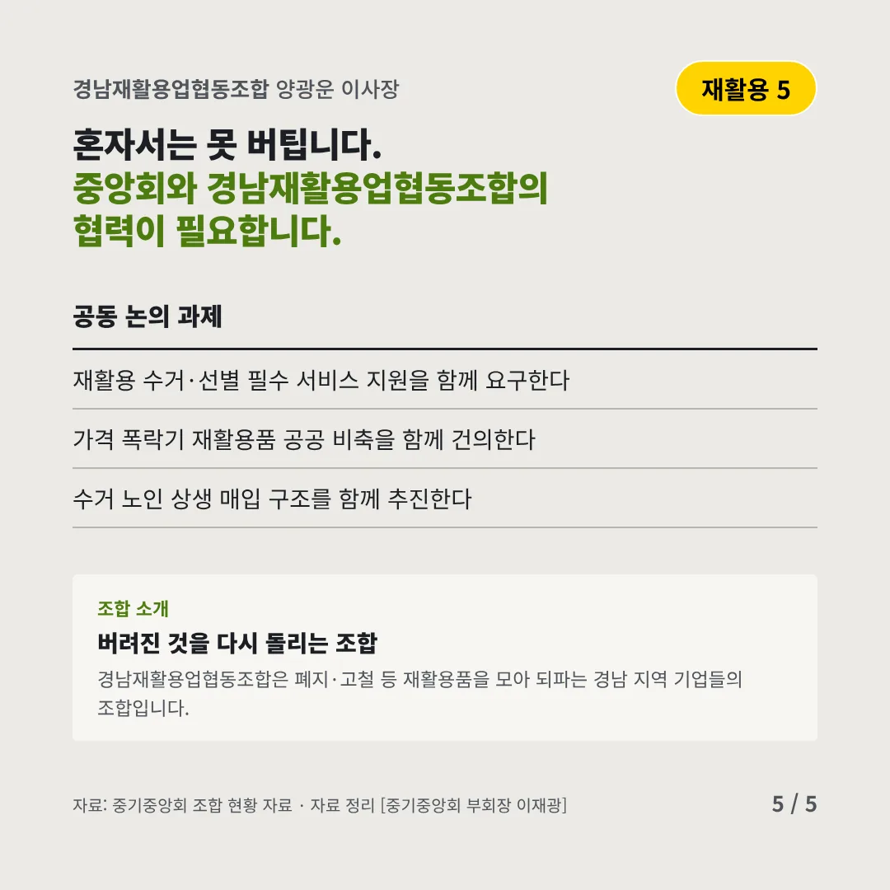
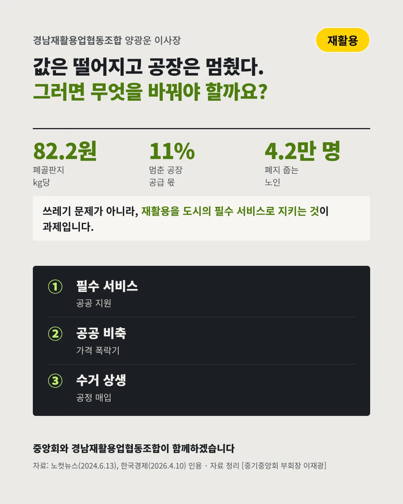

경남재활용업협동조합
재활용품 값은 떨어지고, 사 갈 공장은 멈췄다
82.2원 폐골판지 kg당 전국 평균 매입 단가






재활용은 도시가 굴러가게 하는 일입니다. 재활용 업계는 어디로 가야 할까요?
숫자로 보는 현실
- 11%멈춘 한 제지공장의 공급 몫국내 골판지 원지 공급 중(2026.3 가동 중단)
- 4.2만 명폐지를 줍는 노인재활용 수거의 맨 앞에 선 사람들
- 1,226원그분들의 시간당 수입최저임금의 13% 수준
무엇이 바뀌었나
- 가격: 값이 떨어졌다폐지·폐금속·폐플라스틱 값이 대부분 내려 수거할수록 남는 게 적다
- 수요: 공장이 멈췄다제지공장이 사고·화재·경영난으로 잇따라 멈춰 폐지가 쌓였다
- 연쇄: 수거가 막힌다폐지가 빠지지 않으면 플라스틱·캔 수거까지 어려워진다
그래도 길은 있다
- 필수 서비스로 인정받는다재활용 수거·선별을 도시의 필수 서비스로 보고 공공 지원을 받는다
- 값이 떨어질 때 받쳐 준다가격 폭락기에는 공공 비축으로 재활용품이 쌓이지 않게 한다
- 수거 현장과 함께폐지 수거 노인과 상생하는 공정한 매입 구조를 만든다
한 장 요약

조합 소개
경남재활용업협동조합은 폐지·고철 등 재활용품을 모아 되파는 경남 지역 기업들의 조합입니다.
자료: 노컷뉴스(2024.6.13), 한국경제(2026.4.10)